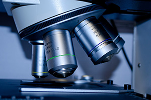

연구성과
research result
-
- 브랜드
- 자가관리 질병치료 제품 연구
- 생애주기별 건강관리 제품 연구
- 여드름 및 안티에이징 더마 제품 연구
- Big 브랜드 신제품 및 신제형 확장 제품 연구
-

- 신제품
- 플랫폼 신기술 연구 :
- 마이크로바이옴 연계 기술
- 무(합성)보존제 제제설계 기술
- 맞춤형 건강 관리 3D 프린팅 기술
-
- 학술임상
- 신소재 확보 연구
- R-20-EF204 과제 임상 연구
- R-21-SC001 과제 임상 연구
- R-19-EF203 과제 안전성 연구
과제달성
-
동아제약은 2020년 6회 연속 소비자 중심경영(ccm) 인증을 받았으며, 동아쏘시오그룹 정도경영 선포에 따라 지속가능경영을 실천하기 위한 의사협의기구 사회적가치위원회를 출범하였습니다.
동아제약 연구소는 기존의 우수한 제품을 연구한다는 목표와 더불어 연구 초기 단계부터 소비자의 관점으로 생각하고, 사회적기업으로서 친환경, 환경 보호, 기후 변화에 대응 가능한 제품을 개발하기 위해 연구에 박차를 가하고 있습니다.
그 결과 2020년에 미니막스 친환경 용기, 가그린 투명 용기 출시 등의 성과를 낼 수 있었습니다.
-
향후 동아제약 연구소에서는 미래 성장 가능성이 높은 잠재적 시장 발굴을 통해 중점 연구 분야를 선정하고,
중장기 전략을 수립하여 박카스, 가그린 등과 같은 대형 브랜드 제품을 개발하여 국민 건강에 이바지할 수 있는 기업이 되기 위해 노력할 것입니다.
또한 글로벌 시장을 겨냥한 새로운 고지혈증 치료제의 개발 등 다수의 신물질 합성을 통한 신약 개발에 도전하고 있으며, 바이오 기술 및 천연물을 이용한 신약연구에도 박차를 가하여 제2, 제3의 신약 탄생을 준비하고 있습니다.